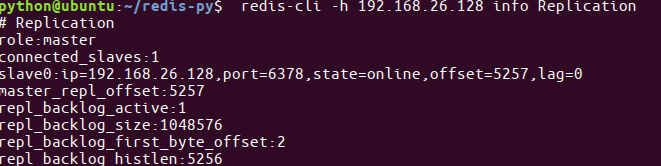
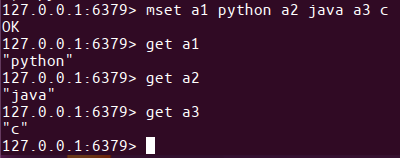

学习目标
- 掌握redis主从配置
主从概念
- ⼀个master可以拥有多个slave，⼀个slave⼜可以拥有多个slave，如此下去，形成了强⼤的多级服务器集群架构
- master用来写数据，slave用来读数据，经统计：网站的读写比率是10:1
通过主从配置可以实现读写分离

master和slave都是一个redis实例(redis服务)
主从配置
配置主
查看当前主机的ip地址
ifconfig
修改etc/redis/redis.conf文件
sudo vi redis.conf
bind 192.168.26.128重启redis服务
sudo service redis stop
redis-server redis.conf
配置从
复制etc/redis/redis.conf文件
sudo cp redis.conf ./slave.conf
修改redis/slave.conf文件
sudo vi slave.conf
编辑内容
bind 192.168.26.128
slaveof 192.168.26.128 6379
port 6378redis服务
sudo redis-server slave.conf
查看主从关系
redis-cli -h 192.168.26.128 info Replication

数据操作
在master和slave分别执⾏info命令，查看输出信息 进入主客户端
redis-cli -h 192.168.26.128 -p 6379
进入从的客户端
redis-cli -h 192.168.26.128 -p 6378
在master上写数据
set aa aa

在slave上读数据
get aa
